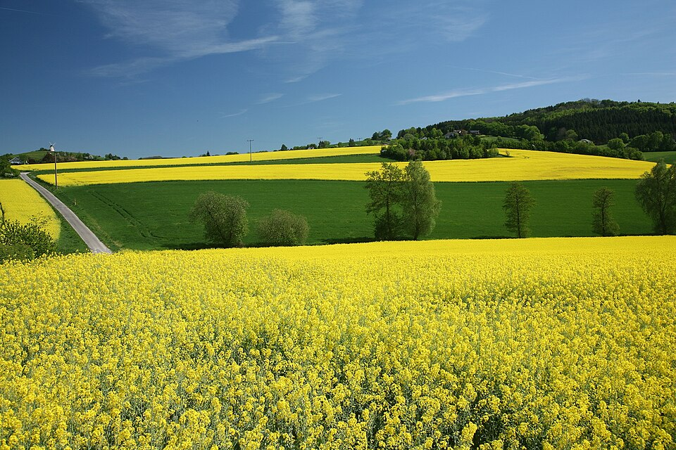
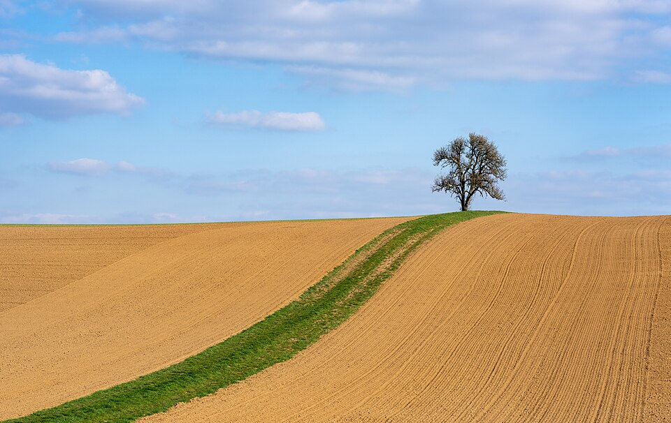
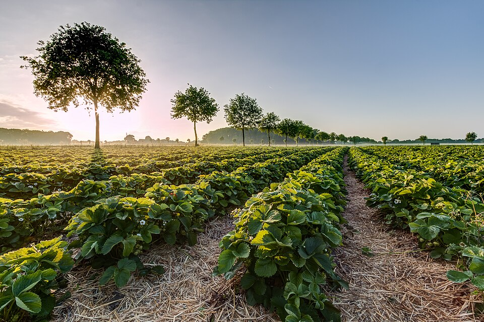

- Agro forte, futuro sustentável
- Equilíbrio entre produção e meio ambiente
O agronegócio é um motor da economia e da segurança alimentar, mas seu crescimento precisa ser planejado. Produzir com responsabilidade significa adotar práticas que aumentem a produtividade sem degradar o solo, a água e os recursos naturais, garantindo alimentos para a população de forma contínua.

A inovação é aliada da sustentabilidade. Tecnologias como o uso eficiente de insumos, monitoramento digital das lavouras e mecanização inteligente permitem produzir mais com menos impactos ambientais. Assim, o setor se torna mais competitivo e resiliente, atendendo às demandas do mercado e da sociedade.

Garantir um futuro sustentável exige cuidar da biodiversidade, recuperar áreas degradadas e proteger os recursos naturais. Um agro forte é aquele que cresce em harmonia com o meio ambiente, equilibrando produção, renda e preservação, garantindo que as próximas gerações também tenham um planeta produtivo e saudável.
